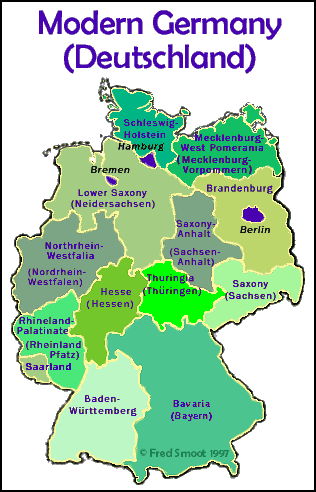

Modern Germany (Deutschland)
German Federal States from 1991
(German Spelling in Parenthesis)
|  |
Baden-Württemberg Capital City: Stuttgart Bavaria (Bayern) Capital City: Munich (München) Berlin City State. Brandenburg Capital City: Potsdam Bremen City State. Hamburg City State. Hesse (Hessen) Capital City: Wiesbaden Lower Saxony (Neidersachsen) Capital City: Hanover (Hannover) Saxony-Anhalt (Sachen-Anhalt) Capital City: Magdeburg Mecklenburg-Vorpommern (Mecklenburg-West Pomerania) Capital City: Schwerin Northrhein-Westfalia (Nordrhein-Westfalen) Capital City: Düsseldorf Rhineland-Palatinate (Rheinland-Pfalz) Capital City: Mainz Saarland Capital City: Saarbrücken Saxony (Sachen) Capital City: Dresden Schleswig-Holstein Capital City: Kiel Thuringia (Thüringen) Capital City: Erfurt |